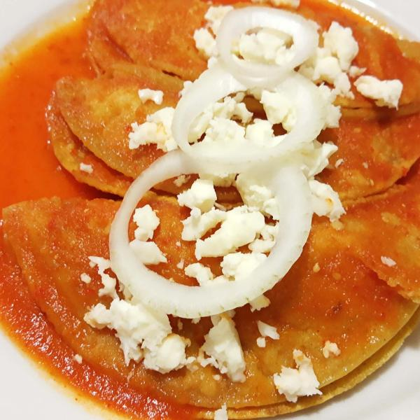

Home
Entomatadas

Description
Easy Mexican recipe
This Entomatadas recipe serves as a gentle introduction to Mexican cooking
Ingredients
- Tomatoes
- Serrano peppers
- Onions
- Garlic
- Oregano
- Vegetable oil
- Cheese
- Corn tortillas
- Sour cream (optional)
Steps:
- Roast the tomatoes and serrano peppers. It's better if you have a comal around, but if you don't have one you can grab some aluminum foil and roast them with a pan, or even directly into the fire.
- At the same time, chop onions into thumb-sized pieces, finely chop garlic and pan fry them with oil until the garlic turns golden brown.
- Put the roasted tomatoes and peppers, and the onion and garlic in a blender alongside oregano and start blending until liquified.
- Heat up a pan (can be the same onions and garlic pan or could be a different one) and add some oil, after gettinng hotter put the recently blended sauce into it.
- Cook the sauce with low heat for 10 to 15 minutes, stir occasionally.
- In another pan, add the oil so that we fry tortillas for the dish.
- Fry the desired amount of tortillas in the pan and dry them afterwards.
- When all the tortillas are ready, dip them into the sauce, add chopped onions and cheese and roll them over. Repeat for all tortillas.
- After that, add some more sauce, onions and (optionally) sour cream to complete the dish.